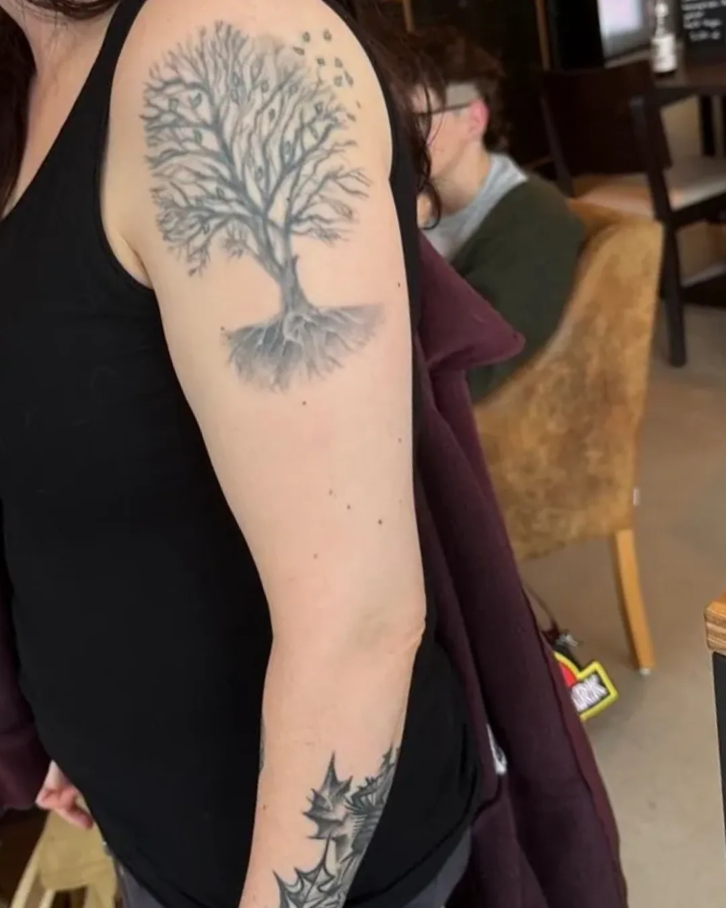
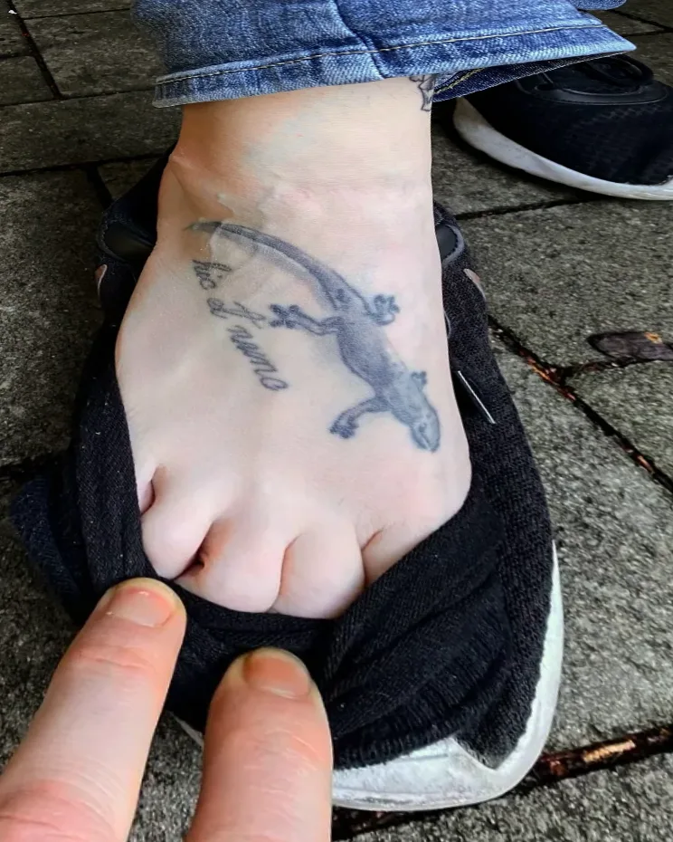
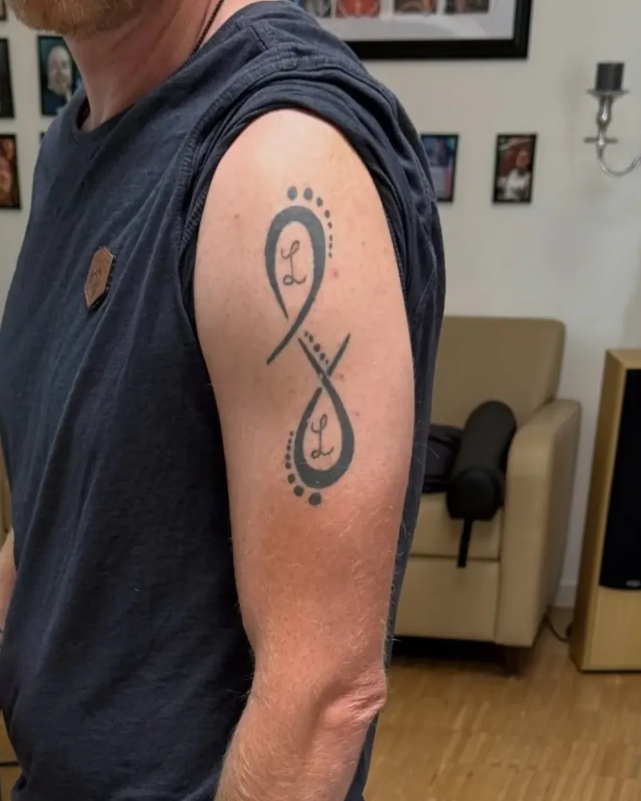
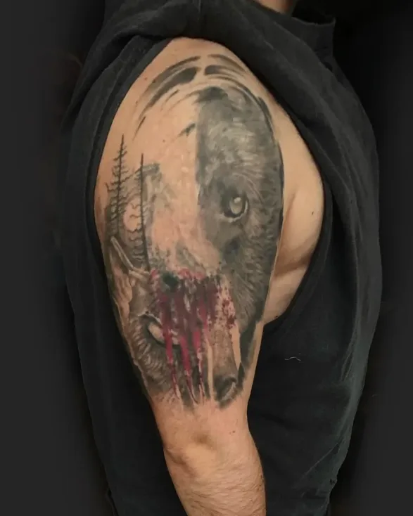
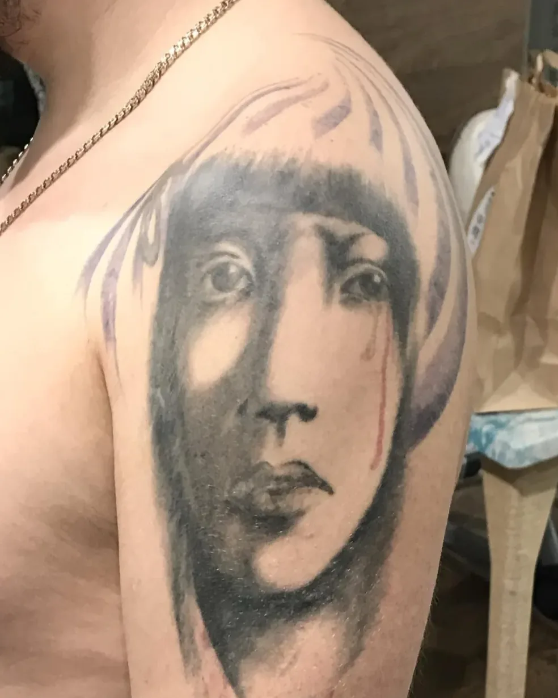

Перекрытия

 ПослеДо
ПослеДоБонсай · ювелирно чистое перекрытие без лазера

 ПослеДо
ПослеДоИгуана и пингвин · сохранил идею клиента, но сделал немного лучше, чем было

 ПослеДо
ПослеДоТигр с изумрудом · из старого портачка — в роскошь ар-деко

 ПослеДо
ПослеДоВикинг · светлым можно перекрыть практически всё, вопрос только во времени

 ПослеДо
ПослеДоПерекрытие моего первого «реализма» — делал его в 2008–2009 годах близкому другу